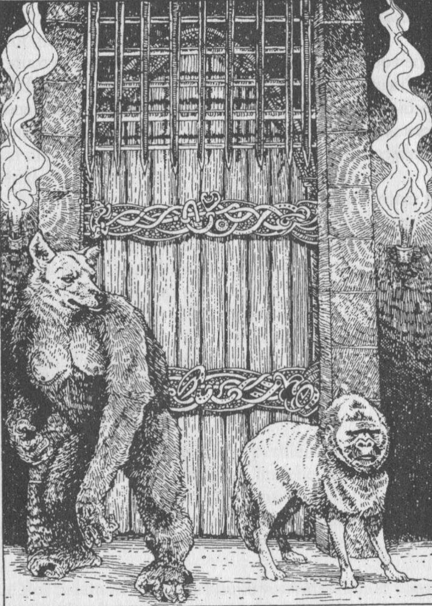

deux de votre groupe deviendron des joueur et le troisiemme seras le maitre. les joueur crée leurs personage en leurs donnants un nom et en jouans avec les option de DOUBLE JEU et de PROGRESSION et le Maitre lui Choisis les livre et lit le texte, apres avoir lue le texte les joueur dise ce qu'il font et le Maitre prend le numeraux adapté, si il nas pas l'option que les joueur souhaite dans les option le Maitre leurs dit que ces imposible et que son personnage devras faire autre chose. Aussi le Maitre roule les dés des monstres.
si vous utiliser ces regle le maitre peut modifier ou créé sa propre trame d'aventure en modifiant les introduction, les conclusion et meme les rencontre.
si vous utiliser ces regle nous vous suggerons de telecharger la feuille d'aventure que vous trouverez ci-dessous
jouer de cette facon requierd que le maitre improvise un peut (dialogue de PNJ par exemple), le maitre devras pour cela bien conaitre le livre et jouer requierd un minimum de preparation (avoir deja fait le livre et l'avoir bien en memoir et avoir une carte pour vous facilité la tache lors des deplacement des joueur). voici un exemple de preparation pour le livre La Citadelle du Chaos.
Rien ne vous empêche d'utiliser vos livre comme tout autre Livre dont vous êtes le Héros en vous plongeant seul dans sa palpitante aventure. Mais elle le sera encore plus si deux de vos amis ont l'heureuse idée de jouer avec vous en allans lui meme sur ce site, car vous serez alors deux héros, aux caractères et aux talents différents, qui pourront se rencontrer, s'allier, s'affronter ou se réconcilier en poursuivant chacun leur quête parmi de semblables périls. Chacun de vous continuera de vivre une aventure distincte, mais l'autre pourra y intervenir.
Si vous optez pour ce « Double Jeu », commencez comme d'habitude par lire le paragraphe 1, puis dites à l'autre, votre partenaire, quel paragraphe vous avez choisi et attendez qu'il ait fait de même avant d'aller plus loin.
Vous pouvez voyager dans des directtion differante en fesant des choix differant, mais si un combat est declancher et que les deux sont dans la meme piece le combat ce declanche pour les deux.
Il vous sera souvent demandé, au long des pages de ce livre, de combattre des créatures de toutes sortes. Parfois, vous aurez la possibilité de fuir ou d'utiliser la magie. Sinon - ou si vous décidez de toute façon de combattre - il vous faudra mener la bataille comme suit.
Tout d'abord, vous inscrivez les points d'HABILETÉ et d'ENDURANCE de la créature. Les points correspondant à chaque créature sont donnés dans le livre chaque fois que vous faites une rencontre.
Le combat se déroule alors ainsi :
1. Jetez les deux dés pour la créature. Ajoutez ses points d'HABILETÉ au chiffre obtenu. Ce total vous donnera la Force d'Attaque de la créature.
2. Jetez les deux dés pour vous-même. Ajoutez le chiffre obtenu à vos propres points d'HABILETÉ. Ce total représente votre Force d'Attaque.
3. Si votre Force d'Attaque est supérieure à celle de la créature, vous l'avez blessée. Passez à l'étape n° 4. Si la Force d'Attaque de la créature est supérieure à la vôtre, c'est elle qui vous a blessé. Passez à l'étape. Si les deux Forces d'Attaque sont égales, vous avez chacun esquivé les coups de l'autre - reprenez le combat en recommençant à l'étape n° 1, cependant ces votre alier qui prend votre tour
4. Vous avez blessé la créature, vous diminuez donc de deux points son ENDURANCE. Vous pouvez également vous servir de votre CHANCE pour lui faire plus de mal encore (voir plus loin)
5. La créature vous a blessé, vous ôtez alors deux points à votre ENDURANCE. Vous pouvez également faire usage de votre CHANCE (voir plus loin).
6. Modifiez votre score d'ENDURANCE ou celui de la créature, selon le cas. (Faites de même pour vos points de CHANCE si vous en avez fait usage)
7. votre alier vas ensuite commencer le deuxième Assaut (en reprenant les étapes de 1 à 6). Vous poursuivrez ainsi l'ordre des opérations jusqu'à ce que vos points d'ENDURANCE ou ceux de la créature que vous combattez aient été réduits à zéro (mort).
À certaines pages, vous aurez la possibilité de fuir un combat s'il vous semble devoir mal se terminer pour vous. Si vous prenez la fuite, cependant, la créature vous aura automatiquement infligé une blessure tandis que vous vous échappez. (Vous ôterez alors deux points à votre ENDURANCE.) C'est le prix de la couardise. Pour cette blessure, vous pourrez toutefois vous servir de votre CHANCE selon les règles habituelles (voir plus loin). La Fuite n'est possible que si elle est spécifiée à la page où vous vous trouverez.
Si vous croisez plus d'une créature, lors de certaines rencontres, vous lirez à la page correspondante les instructions qui vous permettront de mener la bataille. Parfois, vous les affronterez comme si elles n'étaient qu'un seul monstre ; parfois, vous les combattrez une par une.
À plusieurs reprises au cours de votre aventure, lors de batailles ou dans des situations qui font intervenir la chance ou la malchance (les détails vous seront donnés dans les pages correspondantes) vous aurez la possibilité de faire appel à votre chance pour essayer de rendre une issue plus favorable. Mais attention ! L'usage de la chance comporte de grands risques et si vous êtes malchanceux, les conséquences pourraient se révéler désastreuses.
Voici comment on peut se servir de la chance : jetez deux dés. Si le chiffre obtenu est égal ou inférieur à vos points de CHANCE, vous êtes chanceux, et le résultat tournera en votre faveur. Si ce chiffre est supérieur à vos points de CHANCE, vous êtes malchanceux et vous serez pénalisé.
Cette règle s'intitule : Tentez 'votre Chance. Chaque fois que vous « Tenterez votre Chance », il vous faudra ôter un point à votre total de CHANCE. Ainsi, vous vous rendrez bientôt compte que plus vous vous fierez à votre chance, plus vous courrez de risques.
À certaines pages du livre, il vous sera demandé de Tenter votre Chance et vous serez averti de ce qui vous arrivera selon que vous serez chanceux ou malchanceux. Lors des batailles, cependant, vous pourrez toujours choisir d'utiliser votre chance, soit pour infliger une blessure plus grave à une créature que vous venez de blesser, soit pour minimiser les effets d'une blessure qu'une créature vient de vous infliger.
Si vous venez de blesser une créature, vous pouvez Tenter votre Chance à la manière décrite plus haut. Si vous êtes chanceux, vous avez infligé une blessure grave et vous pouvez ôter deux points de plus au score d'ENDURANCE de la créature. Si vous êtes malchanceux cependant, la blessure n'était qu'une simple écorchure, et vous devez rajouter un point au score d'ENDURANCE de la créature (c'est-à-dire qu'au lieu d'enlever les deux points correspondant à la blessure, vous n'aurez ôté qu'un seul point).
Si la créature vient de vous blesser, vous pouvez Tenter votre Chance pour essayer d'en minimiser les effets. Si vous êtes chanceux, vous avez réussi à atténuer le coup. Rajoutez alors un point d'ENDURANCE (c'est-à-dire qu'au lieu de deux points ôtés à cause de la blessure, vous n'aurez qu'un point en moins). Si vous êtes mal' chanceux, le coup que vous avez pris était plus grave : dans ce cas, enlevez encore un point à votre ENDURANCE.
Rappelez-vous que vous devez soustraire un point de votre total de CHANCE chaque fois que vous Tentez votre Chance.
Il est possible que vous voulliez conserver votre personage apres avoir terminer une partie, nou vous conseillons alors d'utiliser ces regl non-officiel. Premierement conserver l'equipement de debuts d'aventure (potion, formule magique, ect) meme si tout ces objets ne vous serons pas utile car certain de ceux-ci pourons etre utiliser dans plusieurs livre commme par exemple la potion de bonne fortune du livre la foret de la malediction ou encore la formule d'endurence de la citadelle du chaos. Certain livre fait des ajouts a la feuille d'aventure comme par exemple dans la citadelle du chaos la case magie, dans ce cas ajouter la case sur votre feuille d'aventure meme si vous ne vous en servirez probablement seulement dans un seul livre. Apres chaque quete Terminer votre personnage obtiendras un bonus de trois points qu'il pouras repartir a sont choix entre son habilité, sont endurence et sa chance.
